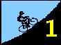
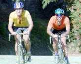
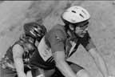
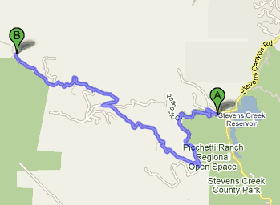
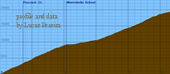

|  | |
| Tracy Colwell and Mike Denardi at the head of the field |
Well over double the 1996 turnout resulted in the first-ever two-wave start as the Low-Key Hillclimbs opened the 1997 season in spectacular fashion. Tracy Colwell was back, faster than ever in his Low-Key Hillclimb leader's jersey, to demolish by 84 seconds Henrik Johannson's 1996 record of 27:04. Henrik's time would have earned him only fourth place in '97.
|  |
| Mike Jenson and Liz Borra of LGBRC were first in the Mixed Tandem category |
Meanwhile, newcomer Alison Buxton of Cyclecraft blitzed the climb in 33:20 to lead the women's standings, although Laura Stern's 1995 record of 31:42 remains intact. Julie Colwell finished fourth among the women to give Team Colwell the team lead, while Scott Rienhardt's solid 29:39 supported Buxton's result to put Cyclecraft in second place. TNT, back in strength for '97, leads the women's team standings thanks to strong rides by Kirsten Neubauer and Mickey Weinberg. AV's Mike Denardi and Kevin Fox put Alto Velo at the top of the men's team rankings.
Special thanks go to this week's volunteers! Despite the huge turnout, and the fact that week 1 is by far the most challenging week to pull off due to the processing of release forms, things went smoothly. This bodes extremely well for the coming weeks, when an expected high fraction of returning riders will make the registration process much easier.
At least four riders removed their helmets during the Montebello climb. Our insurance requires all riders wear a helmet at all times. If you want to remove your helmet, fine, but you're not a part of the Low-Key event, and won't appear in the results. That and no use of aero bars during mass-starts are the two key rules to remember.
Opening day! Do you have the pre-series jitters? That's understandable, because even though this series is low-key, the energy is intense! Oh sure, we are here to have fun, but who are we fooling? Riding(or racing) uphill is never totally fun. Who will show up this year? There will be those who just want to make it to the top. There will be those who last year could be heard mumbling "just wait until next year." Well, next year is here! Maybe someone heard about Tracy Colwell's exciting performances of last year and would like to partake in this excitement-a challenge perhaps? After the promenade to the base of Montebello Road, the horn will sound, and then it's time to enjoy the 3rd year of what has turned into a celebration on wheels! Great views along with some tough grades make Montebello Road ideal for kicking off the series. We hope to see you there! And bring a friend or family member.
Gary Rather Photography has announced plans to be at the climb!!! So wear your current club jersey, adjust your helmet, and remember the key to good cycling shots -- forget the camera is there; allow it to be an invisible eye on the action. Keep your eyes up the road, think about what an incredibly strong climber you are, and the shot will come out great!
Photos will be available for sale after the event, either at following climbs or via Gary's web site. Watch this site for more info!
| Distance: | 5.2 miles (8.4 km) |
| Climbing: | 2020 feet (615 m) |
| Also Used | 1995 week 1 1996 week 1 |
| Format: | Mass Start |
| Start: | Meet in parking lot at Stevens Creek Resevoir just north of Montebello Road. Rider will promenade to base of Montebello where timer will start. |
| Directions | Check out the interactive Yahoo map! |
| Finish: | top of paved road, just before gate to dirt section. |
| Reg Time: | 10:00 am to 10:20 am |
| Start Time: | 10:30 am |
| Fee: | $5 per entry, under 18 or over 65 free! |
| Weather: | Click here for local forecasts |
| Map: |  Click on map for expanded view |
| Profile: |  Click on profile for Lucas Pereira's Montebello page |
|
Beneath Amon Hen I heard his cry. There many foes he fought. His cloven shield, his broken sword, they do the water brought. His head so proud, his face so fair, his limbs they laid to rest; And Rauros, golden Rauros-falls, bore him upon its breast. O Boromir! The Tower of Guard shall ever northward gaze To Rauros, golden Rauros-falls, until the end of days. JRR Tolkein. |
All proceeds from today's climb will go to the Jeff Steinwedel trust fund.
Profile from Lucas Pereira, net climbing and distance from Bill Bushnell.
{kind=link}